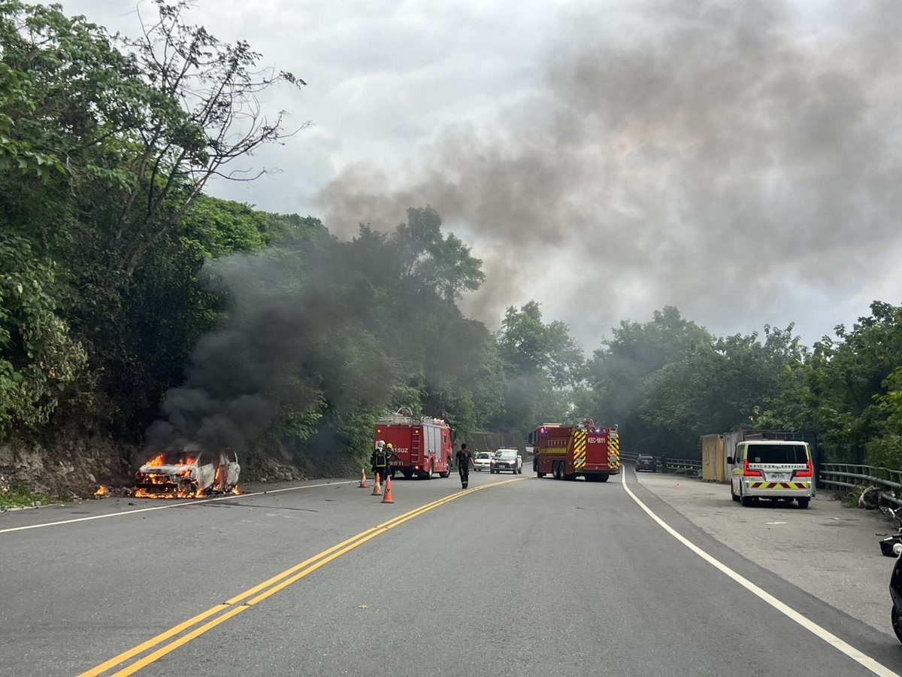
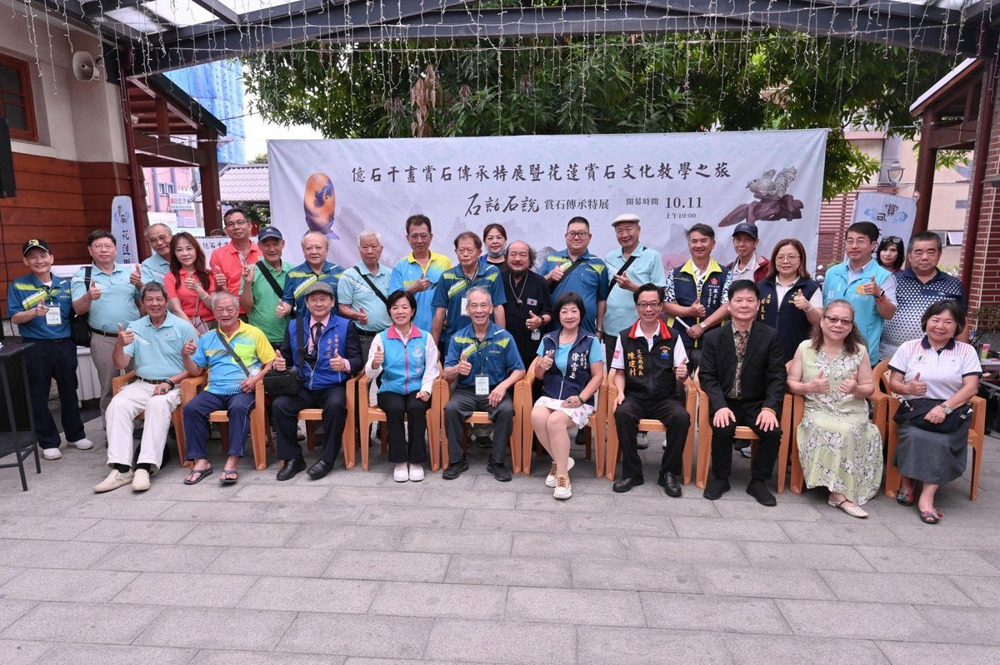
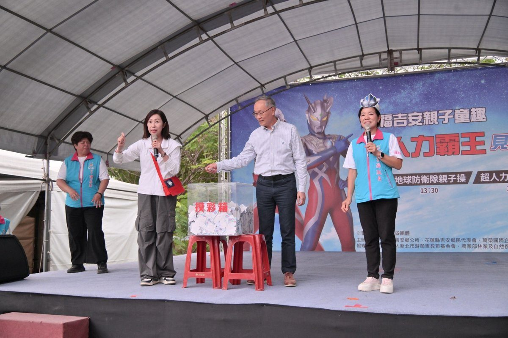
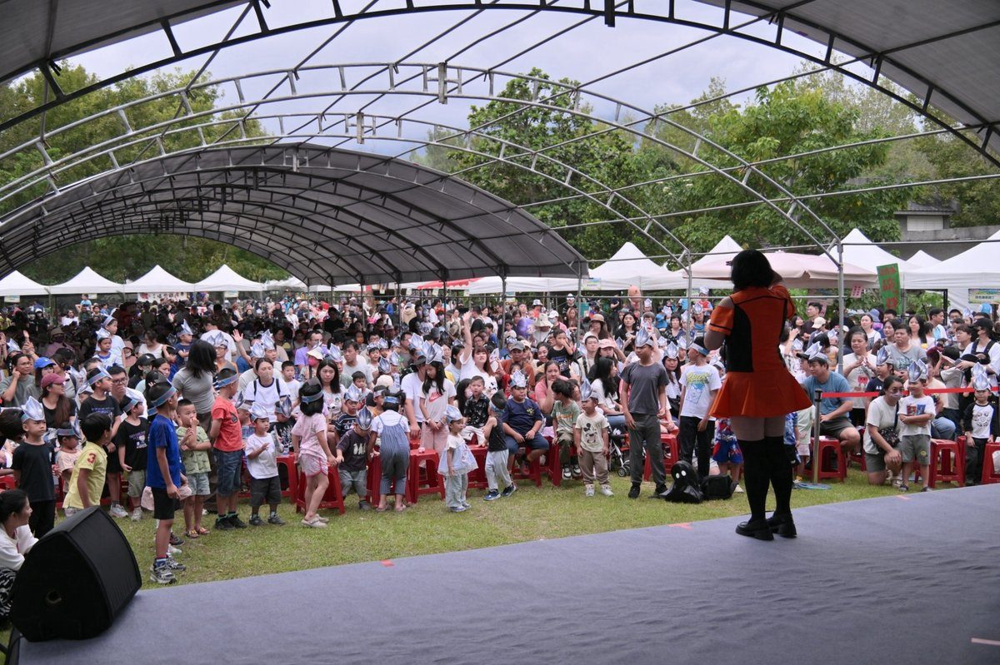
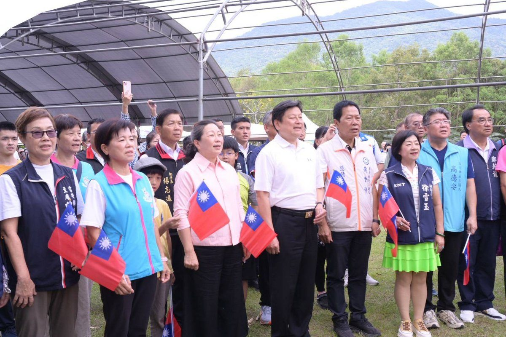

花蓮縣重陽敬老禮金持續發放 徐榛蔚親訪南區百歲人瑞溫馨祝福
花蓮縣長徐榛蔚前往南區親訪百歲人瑞並致贈重陽敬老禮金1萬元與總統府敬老狀。115年度重陽敬老禮金現金發放至11月27日止，縣府並推動多項長者福利新措施。…
閱讀全文 →花蓮縣長徐榛蔚前往南區親訪百歲人瑞並致贈重陽敬老禮金1萬元與總統府敬老狀。115年度重陽敬老禮金現金發放至11月27日止，縣府並推動多項長者福利新措施。…
閱讀全文 →
花蓮縣政府辦理花蓮市商校街共同管道與人行系統整建工程，將於115年10月19日起進行路面刨鋪，採分段全線封閉施工，預計10月23日完工恢復通車，請用路人提早配合改道。…
閱讀全文 →
花蓮縣政府公佈11月28日地方選舉暨公投日的勞工放假與出勤工資規範。了解投票日作為特殊休假的性質、不同班別的工資計算方式，以及雇主未依法給假給薪的罰則，確保您的勞動權益。…
閱讀全文 →
花蓮吉安鄉今傳住宅火警，消防迅速撲滅火勢幸無傷亡。吉安鄉長游淑貞第一時間偕公所團隊、村鄰長趕赴現場，啟動馬上關懷機制，慰問受災戶並致贈慰問金，承諾全力協助災後清理與重建。同時提醒鄉親注重居家防火，共同守護家園安全。…
閱讀全文 →
入秋天氣乾燥容易引發呼吸道乾咳、皮膚乾癢過敏以及季節性憂鬱情緒，花蓮慈濟醫院中醫師黃繻誼傳授秋季養生秘訣。藉由百合與銀耳食療潤肺抗燥、早臥早起順應自然規律收斂陽氣，並搭配按壓太沖穴、百會穴與神門穴舒緩身心，同時提醒避免劇…
閱讀全文 →
吉安鄉永興四街排水溝改善工程說明會召開，鄉長游淑貞親自主持，與地主充分溝通，承諾優化農村基礎建設並保障農民土地權益。工程獲花蓮縣政府553萬補助，將重建排水溝、鋪設路面，大幅提升農田灌排效能與道路安全，打造永興村宜居新貌…
閱讀全文 →
花蓮縣政府於理想大地渡假飯店舉辦第38屆秋季集團結婚「縱谷豐年・洄瀾好囍」，縣長徐榛蔚親臨現場見證30對新人許下終身誓言。活動結合兩天一夜水岸小旅行，並提供成家好禮與十萬元抽獎，為新人送上最豐盛的花蓮幸福祝福。…
閱讀全文 →
花蓮縣政府於鯉魚潭盛大舉辦秋季健走活動，縣長徐榛蔚偕立委傅崐萁及多位地方民代與鄉親共同同樂。活動融合自然風光、特色市集、表演節目、摸彩活動及小學生 Cosplay 創意亮點，吸引大批民眾走入戶外，在湖光山色中體驗規律運動…
閱讀全文 →
花蓮縣吉安鄉太昌國小網球隊於115年基層訓練站區域對抗賽勇奪國小組冠軍。吉安鄉公所團隊前往頒贈紅榜致贈獎勵品，肯定校方攜手家長推動多元發展。校方規劃改善風雨球場夜間照明，鄉公所亦承諾持續挹注資源深耕基層體育，攜手打造適性…
閱讀全文 →
花蓮縣政府宣佈自116年起全面升級敬老福利政策！縣長徐榛蔚出席重陽敬老活動時指出，除維持長照補助與每月1500元計程車車資補助外，明年起每人每月將增發1000點生活物資點數，重陽敬老金亦調升至3500元起，百歲人瑞最高可…
閱讀全文 →
花蓮縣警察局新城分局和平派出所所長周光譽前往吾固子部落和中文健站，為在地長者舉辦交通安全宣導活動。內容涵蓋行人安全觀念、路口禮讓機制，以及自今年5月31日起實施的高齡駕駛人換照新制。警方強調，年滿70歲駕駛人須體檢合格換…
閱讀全文 →
花蓮聖元宮舉辦週年宮慶大典，花蓮縣馬府千歲文化交流協會由主委吳水籐帶領幹部發起公益關懷，捐贈1,333斤白米協助吉安鄉宜昌、南昌及勝安村共200戶弱勢家庭。吉安鄉長游淑貞頒贈感謝狀，強調鄉公所將持續串聯民間資源公私協力，…
閱讀全文 →
花蓮縣臺9線163.9公里南下車道於10月11日下午發生自小客車起火事故。湯姓男子駕駛車輛行經崇德路段時，副駕駛座置物箱突冒濃煙，駕駛與乘客迅速下車避難幸無人傷。新城警分局與消防隊迅速到場撲滅火勢並實施雙向交管，詳細起火…
閱讀全文 →
「115年全國億石千畫賞石傳承特展」於吉安好客藝術村隆重登場！展出150件東海岸玉石、玫瑰石、金瓜石等珍品雅石與奇木雕刻，展期至10月18日止，吉安鄉長游淑貞邀請全國國人親臨感受花蓮石藝魅力。…
閱讀全文 →
花蓮縣吉安鄉公所於雙十國慶當日舉辦盛大健走活動，吸引超過萬名鄉親熱情參與。活動現場除了莊嚴的升旗典禮，更設有36個特色市集攤位並推出百元換二百的限量加倍券，大幅帶動在地消費經濟。現場更有超人力霸王見面會、雜耍表演及30台…
閱讀全文 →
花蓮縣吉安鄉公所於國慶連假期間，在南華工作站舉辦「幸福吉安親子童趣～超人力霸王見面會」，吸引全國眾多親子家庭共襄盛舉。活動由吉安鄉長游淑貞聯手萬榮國際企業與游榮吉教育基金會共同促成，不僅呈現精彩的超人力霸王英雄對戰秀，更…
閱讀全文 →
歡慶雙十國慶，花蓮縣長徐榛蔚偕同立委傅崐萁及吉安鄉長游淑貞出席「115年吉安健走迎雙十」活動。徐榛蔚現場揭示多項重大宜居福利利多，包含0至18歲學生發放萬元就學支持金，以及116年敬老金調升與每月發放生活物資點數，全面展…
閱讀全文 →花蓮縣長徐榛蔚今日特別前往萬榮鄉出席太魯閣族Mgay Bari感恩祭暨傳統技藝競賽，與在地族人歡慶年度盛會。徐縣長於致詞時指出，縣府積極打造友善育兒環境，明年起生育津貼加碼至10萬元，加計中央補助可達20萬元，並搭配完善…
閱讀全文 →
國慶連假首日車流順暢！新城警部署警力疏導 守護用路人行車平安。鄉長游淑貞率團隊積極推動地方建設，用心守護鄉親福祉。…
閱讀全文 →
遊客赴合歡山旅遊車輛於台8線126.5K拋錨受困，新城警分局合歡所警員林宏良馳援疏導交通，載送採買熱食並聯絡拖吊，熱忱服務助民眾平安脫困。…
閱讀全文 →